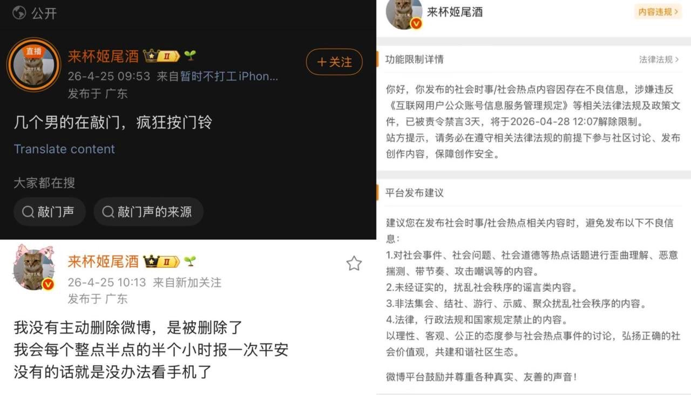

Sorcerer（抹茶重度依赖版）互fo寻回🍥🏳️⚧️
@Sorcerer198964
做得好
就该对这种造谣逼重拳出击
泼饮料还以为自己很正义？

中国悲剧档案
@newszg_official
微博博主“来杯姬尾酒”网上曝光制止大叔站台抽烟事件！#禁言 #深圳
不久视频被和谐，深圳晶哥上门到女孩家里敲门、疯狂按门铃！
之后博主被带走教育，涉嫌侮辱，拟对其行政拘留5天，而大叔仅被批评教育（后改为罚款）！ https://t.co/DBKqABW6go